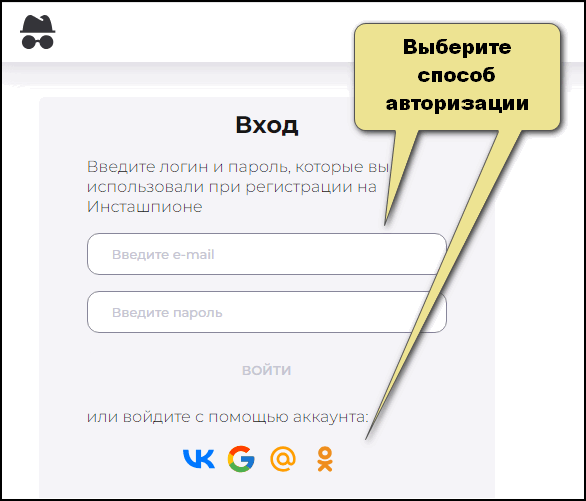
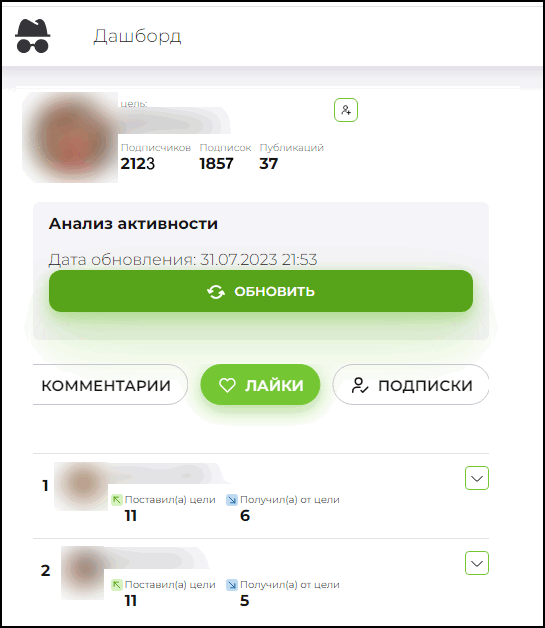
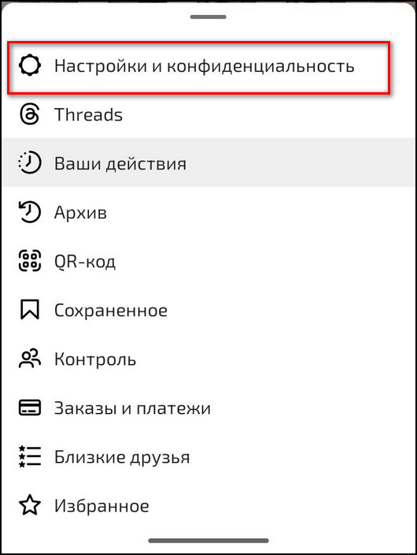
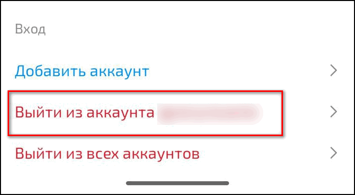
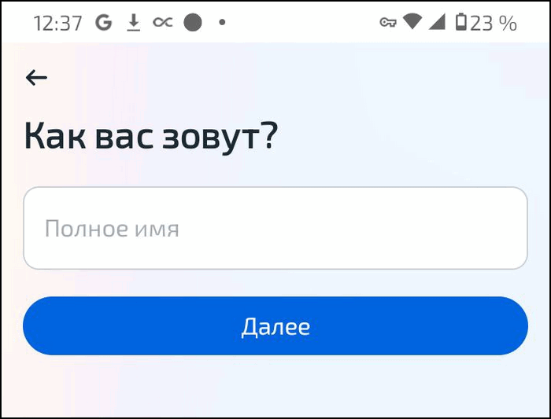
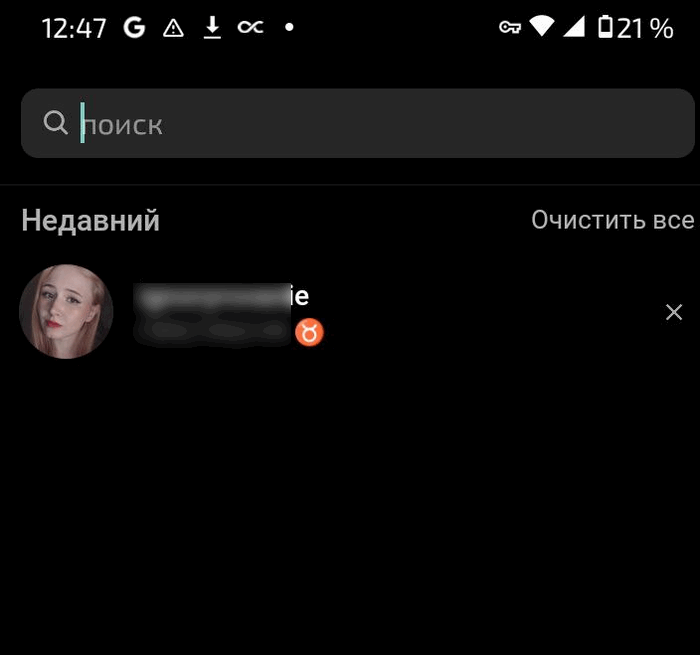
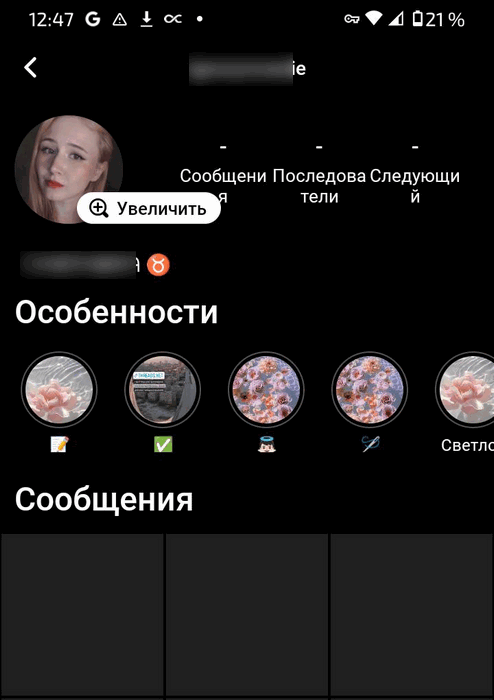
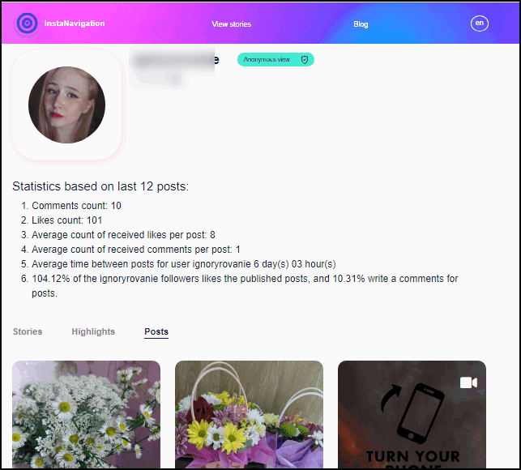

Как смотреть посты в Инстаграме анонимно

Смотреть посты в Инстаграм* анонимно возможно через сторонние сервисы, дополнительный аккаунт или при помощи ссылки, которой поделятся друзья. Просмотр становится проще с помощью компьютерной версии, где можно пролистывать записи без авторизации.
Посмотреть страницу в Инстаграм* анонимно
Гости страницы не отображаются в социальной сети, но никому не хочется попасться, если случайно нажал лайк или перешел в Историю. Владельцам бизнес-аккаунтов активность может быть показана в разделе «Статистика», где есть диаграмма по городам. Поэтому, чтобы скрытно посетить чужой аккаунт, даже закрытый, пользователь может применить один из способов:
- смотреть посты анонимно в Инстаграме* через онлайн сервисы;
- мобильные приложения с возможностью скачивать контент на телефон;
- регистрация дополнительной учетной записи;
- попросить друзей или знакомых поделиться ссылкой.
Любой из вариантов прост в применении. Например, чтобы зарегистрировать еще одну учетную запись, у пользователя должен быть дополнительный номер телефона или адрес электронной почты. Также, регистрация должна быть с включенным сервисом анонимного доступа.
#1 Инсташпион: как скрытно наблюдать за чужим профилем
Сервис Инсташпион поможет в анонимном просмотре чужой страницы. Пользователю нужно добавить никнейм искомого человека и подождать, пока будет прогружена база данных.
Преимущества Инсташпиона:
- анонимный просмотр страницы;
- возможность посмотреть гостей;
- отображение взаимных лайков и комментариев;
- отсутствие подключения к учетной записи - вам не придется авторизовываться в своем Instagram*;
- доступ к Reels и Историям оставаясь анонимным;
- демонстрация Актуального.
Все, что нужно сделать обратившемуся – зарегистрироваться в Инсташпионе и ввести никнейм нужного человека. Как смотреть посты в Инстаграме* анонимно:
- Зайти в Инсташпион – авторизоваться.

- Ввести ник нужного человека – подождать, пока будут прогружены о нем сведения.
- Появится аватарка нужного человека, а также перечень функций.

Даже если пользователь не помнит ника, сервис подскажет при поиске. Появится перечень всех у кого подобное имя в социальной сети и появится миниатюра ватарки. Благодаря этому можно найти нужного человека и посмотреть его записи.
#2 Другая страница
Другая учетная запись и создание второй личности – вариант, как просматривать даже закрытые страницы. Но недостаток способа в том, что нужен дополнительный номер телефона и подключение к сервисам анонимного доступа. Также, владелец страницы может воспользоваться ранее созданным аккаунтом в Facebook*, чтобы зарегистрировать новый профиль. Как это работает:
- Зайти в Инстаграм* - нажать сверху три полоски.

- Настройки и конфиденциальность – Выйти из аккаунта.

- Создать новый – выбрать способ: через Фейсбук* или по номеру телефона.

После регистрации нужно добавить аватарку и описание.
Если пользователь желает сделать аккаунт максимально приближенный к реальному человеку – на помощь придет любая нейросеть, где есть генерация внешности людей. С помощью приложения или сайта Pinterest можно отыскать картинки, чтобы изобразить «повседневную рутину».
Когда профиль будет готов и станет похож на «настоящий»: с помощью поиска отыскать нужного человека и подписаться. Или же просто перейти к просмотру постов, Reels. Этот же способ актуален, если нужно посмотреть анонимно комментарии в Инстаграме*.
#3 Мобильные приложения
С помощью Profile Viewer можно быстро и анонимно просматривать чужие публикации. Приложение работает на Android и его можно скачать с помощью Play Market. После установки не нужна авторизация: безопасно, если пользователь волнуется за свои данные. Использовать для просмотра:
- Зайти в Play Market – вписать в поиске Profile Viewer или скачать по прикрепленной ссылке.
- Перейти в приложение – вписать ник в поиске.

- Найти человека и посмотреть записи.

Кроме этого, умеет скачивать в Галерею фото и видео. Пользователю доступны в анонимном режиме чужие Истории и Актуальное. Есть корректное увеличение аватарки, без потери качестве изображения.
#4 Онлайн-сервисы
Инстаграм* анонимно смотреть с комментариями возможно через онлайн-сервисы. Например, через Instanavigator. Показывает текущие Истории, наличие Актуального, статистику, усредненные показатели активности. Как просматривать записи анонимно:
- Зайти в сервис InstaNavigator – вписать никнейм.

- Подождать, пока прогрузятся сведения – перейти к разделу «Публикации».
- Перейти к записи – снизу появится перечень комментариев.
Если открыть запись – появится кнопка: «Показать комментарии». Далее, появится список всех откликов и никнеймы тех, кто их оставил. Нажав по нику, можно перейти к анонимному просмотру страницы комментатора. Сервис анонимный и не требует подключения к профилю. Можно использовать на компьютере или телефоне. Но его недостаток в том, что история поиска не сохраняется.
#5 Получить ссылку в Инстаграм*
Можно попросить друзей, чтобы они поделились записью на интересующую публикацию. Но предварительно нужно выйти из учетной записи. Такой способ актуален для компьютерной версии, где нет требования установки приложения. Как смотреть в Инстаграм* анонимно посты и комментарии без учетной записи:
- Зайти в социальную сеть с помощью браузера и проверить: не авторизована ли в данный момент учетная запись.
- Нажать по значку в виде «шестеренки» - Выход.
- Попросить, чтобы поделились ссылкой.
- Перейти по полученному адресу и пролистать сбоку комментарии.
Оставлять отклики нельзя – появится уведомление о необходимости регистрации. Если отправлять целую ссылку на аккаунт, то половина контента может быть недоступна. Это также связано с необходимостью регистрации в социальной сети.
Секрет раздела «Поиск» без регистрации
Получить доступ, чтобы смотреть профиль Инстаграм* анонимно с комментариями можно с помощью небольшого секрета. В компьютерной версии можно войти на сайт без создания учетной записи. Понадобится любой актуальный браузер. Как искать информацию в Инстаграме* без регистрации:
- Открыть веб-обозреватель – в поисковой строке написать: Instagram.com/search*
- Начнется загрузка и появится надпись: «К сожалению, страница не найдена».
- Сверху в поиске ввести никнейм нужного человека.
Или же, поступить проще и к добавить ник: Instagram.com/никнейм/*. Обычно, с помощью такого адреса получится сразу перейти к странице пользователя.
Способ не сработает только если страница закрыта или установлены параметры конфиденциальности, запрещающие её отображение при поисковом запросе.
Какие разделы лучше избегать, чтобы не попасться
Чтобы владелец страницы не заметил посетителя, последнему нужно избегать некоторые разделы:
- Истории. Первая ловушка, которая сразу покажет аккаунты тех, кто заходил и смотрел;
- комментарии и лайки. Пользователь может случайно оставить какой-то символ или поставить отметку «Мне нравится».
Если случайно поставить лайк, то владельцу придет уведомление, даже если отметку сразу убрали.
Использование анонимных способов максимально упрощает посещение чужих страниц. Любой владелец бизнес-аккаунта может посмотреть посещение по графику «Страны» или «Города», если те отличаются от его текущего местоположения. Это значит, что если у автора постоянная аудитория из Москвы, но кто-то зашел из Уфы – то это отобразится в диаграмме.